Modello CUDA L'ecosistema CUDA nel suo complesso può essere visto come una struttura stratificata per esprimere algoritmi paralleli su GPU, bilanciando semplicità d'uso e controllo hardware per ottimizzare le prestazioni.
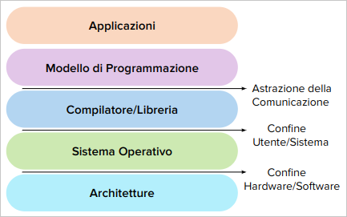
Applicazioni: programmi scritti per risolvere problemi utilizzando CUDA.
Modello di programmazione: CUDA, fornisce astrazione per programmare GPU offrendo concetto con thread, blocchi e griglie.
Compilatore/Librerie: Strumenti che traducono il codice CUDA in istruzioni eseguibili dalla GPU.
Sistema Operativo: Gestisce le risorse, inclusa l'allocazione della GPU tra diverse applicazioni.
Architetture: Le specifiche CPU NVIDIA su cui viene eseguito CUDA.
Modello di Programmazione:
Definisce la struttura e le regole per sviluppare applicazioni parallele su GPU. Elementi fondamentali:
Il Programma:
Rappresenta l'implementazione concreta (il codice) che specifica come i thread condividono dati e coordinano le loro attività. Nel programma CUDA si definisce:
Il calcolo parallelo si articola in tre livelli di astrazione: dominio, logico e hardware.
Livello Dominio:
Chiave: Ottimizza la strategia di parallelizzazione.
Livello Logico:
Chiave: Ottimizza l'efficienza dell'esecuzione parallela.
Livello Hardware:
Chiave: Sfrutta al meglio le risorse GPU.
Thread CUDA:
Un thread CUDA compie:
threadIdx e blockIdx.Thread CUDA vs Thread CPU:
- GPU: Parallelismo massivo con migliaia di thread. CPU: Parallelismo limitato con pochi thread.
- Thread CUDA: Efficienza e Basso Overhead. Thread CPU: Maggior Overhead di gestione.
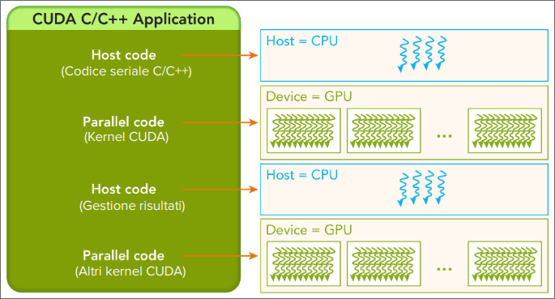
Caratteristiche PCIe
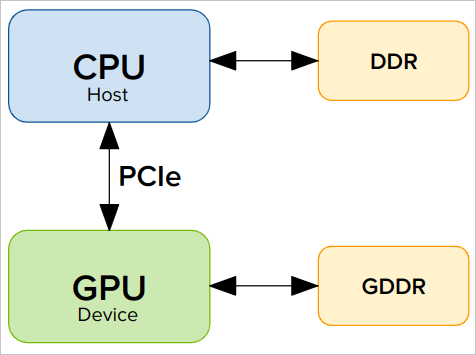
| Standard C | CUDA C | Funzione |
|---|---|---|
malloc() |
cudaMalloc() |
Allocazione Dinamica Memoria |
memcpy() |
cudaMemcpy() |
Copia dati tra aree di memoria |
memset() |
cudaMemset() |
Inizializzazione Memoria ad uno specifico valore |
free() |
cudaFree() |
Libera Memoria |
È responsabilità del programmatore gestire correttamente l'allocazione, il trasferimento e la deallocazione della memoria per ottimizzare le prestazioni.
In CUDA esistono diversi tipi di memoria, ciascuno con caratteristche specifiche in termini di accesso, velocità e visibilità.
| Global Memory | Shared Memory |
|---|---|
| - Accessibile da tutti i thread. | - Condivisa tra i thread all'interno di un singolo blocco. |
| - Più grande e lenta. | - Più piccola e veloce. |
| - Persiste per tutta la durata del programma CUDA. | - Esiste solo per la durata del blocco di thread. |
| - È adatta per memorizzare dati grandi e persistenti. | - Utilizzata per dati temporanei e intermedi. |
Funzioni:
cudaMalloc: Alloca memoria sulla GPU.cudaMemcpy: Copia dati tra host e device.cudaMemset: Inizializza la memoria con un valore specifico.cudaFree: Dealloca memoria sulla GPU.Queste funzioni operano principalmente sulla Global Memory
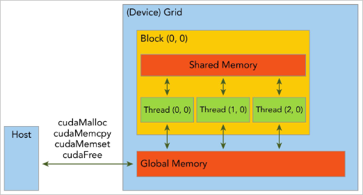
Firma della Fuznione: Online Doc
cudaError_t cudaMalloc(void **devPtr, size_t size);
Parametri:
devPtr: Puntatore alla memoria allocata.size: Dimensione in byte della memoria da allocare.Valore di Ritorno:
cudaError_t: Codice di errore (cudaSuccess se l'allocazione è avvenuta con successo).Note Importanti:
- Allocazione: Riserva memoria lineare contigua sulla GPU e runtime.
- Puntatore: Aggiorna puntatore CPU con indirizzo memoria GPU.
- Stato iniziale: La memoria allocata non è inizializzata.
Firma della Funzione: Online Doc
cudaError_t cudaMemset(void *devPtr, int value, size_t count);
Parametri:
devPtr: Puntatore alla memoria da inizializzare.value: Valore con cui inizializzare la memoria.count: Numero di byte da inizializzare.Valore di Ritorno:
cudaError_t: Codice di errore (cudaSuccess se l'inizializzazione è avvenuta con successo).Note Importanti:
- Utilizzo: Comunemente utilizzata per azzerare la memoria (impostando
valuea 0).- Gestione: L'inizializzazione deve avvenire dopo l'allocazione della memoria tramite
cudaMalloc.- Efficienza: È preferibile usare
cudaMemsetrispetto acudaMemcpyper inizializzare la memoria per ridurre l'overhead.
Esempio di Allocazione di memoria sulla GPU:
#include <cuda_runtime.h>
#include <stdio.h>
int main() {
int *d_data;
size_t size = 1024 * sizeof(int);
cudaError_t err = cudaMalloc(&d_data, size);
if (err != cudaSuccess) {
fprintf(stderr, "Errore di allocazione della memoria: %s\n", cudaGetErrorString(err));
return -1;
}
return 0;
}
Firma della Funzione: Online Doc
cudaError_t cudaMemcpy(void *dst, const void *src, size_t count, cudaMemcpyKind kind);
Parametri:
dst: Puntatore alla destinazione della copia.src: Puntatore all'origine della copia.count: Numero di byte da copiare.kind: Direzione della copiaValore di Ritorno:
cudaError_t: Codice di errore (cudaSuccess se la copia è avvenuta con successo).Tipi di Trasferimento (kind):
cudaMemcpyHostToHost: Host -> Host.cudaMemcpyHostToDevice: Host -> Device.cudaMemcpyDeviceToHost: Device -> Host.cudaMemcpyDeviceToDevice: Device -> Device.Note Importanti:
- Funzione Sincrona: Blocca l'esecuzione del thread host finché la copia non è completata. PEr prestazioni ottimali, minimizzare il numero di trasferimenti dati tra host e device.
Spazi di Memoria Differenti
! ATTENZIONE: I puntatori del device non devono essere dereferenziati nel codice host (spazi di memoria CPU e GPU differenti).
Esempio: Assegnazione errata come host_array = dev_ptr invece di
cudaMemcpy(host_array, dev_ptr, nBytes, cudaMemcpyDeviceToHost).
Conseguenza dell'errore: L'applicazione potrebbe cloccarsi durante l'esecuzione a causa del tentativo di accesso a uno spazio di memoria non valido.
Soluzione: CUDA 6 ha introdotto la Memoria Unificata che consente di accedere sia alla memoria CPU che GPU utilizzando un unico puntatore.
Firma della Funzione: Online Doc
cudaError_t cudaFree(void *devPtr);
Parametri:
devPtr: Puntatore alla memoria da deallocare.Valore di Ritorno:
cudaError_t: Codice di errore (cudaSuccess se la deallocazione è avvenuta con successo).Note Importanti:
- Gestione: È responsabilità del programmatore assicurarsi che ogni blocco di memoria allocato con
cudaMallocsia liberato per evitare memory leaks sulla GPU.- Efficienza: La deallocazione della memoria è un'operazione veloce e non richiede la sincronizzazione tra host e device.
Esempio Completo:
#include <cuda_runtime.h>
#include <stdio.h>
int main() {
int *h_data, *d_data;
size_t size = 1024 * sizeof(int);
h_data = (int *)malloc(size);
for (int i = 0; i < 1024; i++) {
h_data[i] = i;
}
// Allocazione della memoria sul device
cudaError_t err = cudaMalloc(&d_data, size);
if (err != cudaSuccess) {
fprintf(stderr, "Errore di allocazione della memoria: %s\n", cudaGetErrorString(err));
return -1;
}
// Trasferimento dei dati da host a device
err = cudaMemcpy(d_data, h_data, size, cudaMemcpyHostToDevice);
if (err != cudaSuccess) {
fprintf(stderr, "Errore di copia della memoria: %s\n", cudaGetErrorString(err));
return -1;
}
free(h_data);
err = cudaFree(d_data);
if (err != cudaSuccess) {
fprintf(stderr, "Errore di deallocazione della memoria: %s\n", cudaGetErrorString(err));
return -1;
}
return 0;
}
CUDA adotta una gerarchia a due livelli per organizzare i thread basata su blocchi di thread e griglie di blocchi.
Perchè una Gerarchia di Thread?
- Mappatura Intuitiva: permette di scomporre problemi complessi in unità di lavoro parallele più piccole e gestibili, rispecchiando spesso la struttura intrinseca del problema stesso.
- Organizzazione e Ottimizzazione: Il programmatore può controllare la dimensione dei blocchi e della griglia per adattare l'esecuzione alle caratteristiche specifiche dell'hardware e del problema, ottimizzando l'utilizzo delle risorse.
- Efficienza nella Memoria: I thread di un blocco condividono dati tramte memoria on-chip veloce, riducendo gli accessi alla memoria globale più lenta, migliorando le prestazioni.
- Scalabilità e Portabilità: La gerarchia è scalabile e permette di adattare l'esecuzione a GPU con diverse capacità e numero di core. Il codice CUDA, quindi, risultà più portabile e può essere eseguito su diverse architetture GPU.
- Sincronizzazione Granulare: I thread possono essere sincronizzati solo all'interno del proprio blocco, evitando costose sincronizzazioni globali che possono creare colli di bottiglia.
Ogni thread ha una identità unica definita da coordinate specifiche all'interno della gerarchia grid-block. Queste coordinate, private per ogni thread, sono essenziali per l'esecuzione del kernel e l'accesso corretto ai dati.
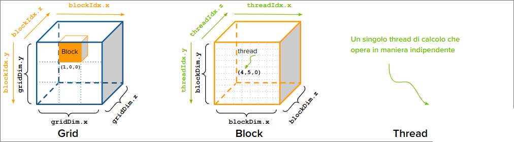
uint3 è un built-in vector type di CUDA con tre campi (x,y,z) gnuno di tipo unsigned int
Variabili di Identificazione (Coordinate):
blockIdx: Coordinate del blocco all'interno della griglia (blockIdx.x,blockIdx.y,blockIdx.z).threadIdx: Coordinate del thread all'interno del blocco (threadIdx.x,threadIdx.y,threadIdx.z). Entrambi sono variabili built-in di tipouint3e sono disponibili in ogni kernel CUDA.Variabili di Dimensioni:
blockDim: Dimensioni del blocco (blockDim.x,blockDim.y,blockDim.z), di tipodim3(lato host),uint3(lato device, built-in).gridDim: Dimensioni della griglia (gridDim.x,gridDim.y,gridDim.z), di tipodim3(lato host),uint3(lato device, built-in).
Dimensioni delle Griglie e dei Blocchi:
dim3 con tre campi usnigned int. I campi non utilizzati vengono inizializzati a 1 e ignorati.Un kernel CUDA è una funzione che viene eseguita in parallelo sulla GPU da migliaia o milioni di thread.
Rappresenta il nucleo computazionale di un programma CUDA.
Nei kernel viene definita la logica di calcolo per un singolo thread e l'accesso ai dati associati a quel thread.
Ogni thread esegue lo stesso codice kernel, ma opera su diversi elementi dei dati.
Sintassi della chiamata Kernel CUDA:
kernel_name <<<gridSize,blockSize>>>(argument list);
gridSize: Diensioni della griglia (numero di blocchi). blockSize: Dimensione del blocco (numero di thread per blocco) argument list: Lista degli argomenti passati al kernel.
con gridSize e blockSize si definisce il numero totale di thread per un kernel e il layout dei thread che si vuole utilizzare.
function_name (argument list);
I qualificatori di funzione in CUDA sono essenziali per specificare dove una funzione verrà eseguita e da dove può essere chiamata.
| Qualificatore | Esecuzione | Chiamata | Note |
|---|---|---|---|
__global__ |
Device (GPU) | Host (CPU) | Funzione eseguita su GPU e chiamata da CPU, sempre di tipo void |
__device__ |
Device (GPU) | Device (GPU) | Funzione eseguita e chiamata su GPU |
__host__ |
Host (CPU) | Host (CPU) | Funzione eseguita e chiamata su CPU |
__global__ void kernel_name (int *d_data, int size) {
// Codice del kernel
}
__device__ int device_function (int a, int b) {
// Codice della funzione device
}
__host__ int host_function (int a, int b) {
// Codice della funzione host
}
Combinazione qualificatori host e device:
__host__ __device__: Funzione eseguita sia su CPU che su GPU, chiamata da entrambi.Permette di scrivere una sola volta funzioni che possono essere eseguite in entrambi i contesti.
Grigle e Blocchi 1D, 2D e 3D:
La configurazione di griglia e blocchi può essere 1D, 2D, o 3D, permettendo una mappatura efficiente ed intuitiva su array, matrici o dati volumetrici.
Esempio di Configurazione 1D:
dim3 gridSize(2); // 2 blocchi
dim3 blockSize(256); // 256 thread per blocco
kernel_name <<<gridSize, blockSize>>>(argument list);
Esempio di Configurazione 2D:
dim3 gridSize(2, 2); // 4 blocchi
dim3 blockSize(16, 16); // 256 thread per blocco
kernel_name <<<gridSize, blockSize>>>(argument list);
Esempio di Configurazione 3D:
dim3 gridSize(2, 2, 2); // 8 blocchi
dim3 blockSize(4, 4, 4); // 64 thread per blocco
kernel_name <<<gridSize, blockSize>>>(argument list);
Adatta per:
Ottimale per problemi con dati volumetrici, come simulazioni fisiche o rendering 3D, dove ogni thread può operare su un voxel o una porzione dello spazio 3D.
Nota: L'efficienza di una configurazione dipende da vari fattori come la dimensione dei dati, architettura della GPU e la natura del problema.
La Compute Capability di NVIDIA è un numero che identifica le caratteristiche e le capacità di una GPU NVIDIA in termini di funzionalità supportate e limiti hardware.
È composta da due numeri: il numero principale indica la generazione della architettura, il secondo indica revisioni e miglioramenti.
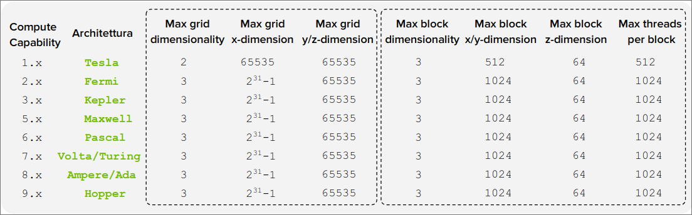
#include <cuda_runtime.h>
//kernel
__global__ void kernel(int *d_data) {
int blockId_x = blockIdx.x, blockId_y = blockIdx.y, blockId_z = blockIdx.z;
int threadId_x = threadIdx.x, threadId_y = threadIdx.y, threadId_z = threadIdx.z;
int totalThreads_x = blockDim.x, totalThreads_y = blockDim.y, totalThreads_z = blockDim.z;
int totalBlocks_x = gridDim.x, totalBlocks_y = gridDim.y, totalBlocks_z = gridDim.z;
//logica del kernel...
}
int main(){
//configurazione griglia e blocchi
dim3 gridSize(2, 2, 2);
dim3 blockSize(4, 4, 4);
//allocazione memoria
int *d_data;
cudaMalloc(&d_data, 1024 * sizeof(int));
//chiamata al kernel
kernel <<<gridSize, blockSize>>>(d_data);
//deallocazione memoria
cudaFree(d_data);
return 0;
}
Vogliamo sommare due array elemento per elemento in parallelo utilizzando CUDA.
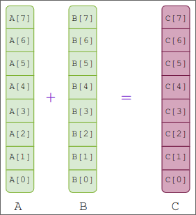
Approccio Tradizionale (CPU):
Approccio Parallelo (CUDA):
// Approccio sequenziale (CPU)
#include <stdio.h>
void add(int *a, int *b, int *c, int n) {
for (int i = 0; i < n; i++) {
c[i] = a[i] + b[i];
}
}
int main() {
int n = 1024;
int a[n], b[n], c[n]; //inizializzati
add(a, b, c, n);
for (int i = 0; i < 10; i++) {
printf("%d + %d = %d\n", a[i], b[i], c[i]);
}
return 0;
}
// Approccio parallelo (CUDA)
#include <cuda_runtime.h>
#include <stdio.h>
__global__ void add(int *a, int *b, int *c, int n) {
int idx = ????; //calcolare l'indice del thread
if (idx < n) { //per evitare accessi non consentiti in memoria
c[idx] = a[idx] + b[idx];
}
}
int main(){
int n = 1024;
int a[n], b[n], c[n]; //inizializzati
int *d_a, *d_b, *d_c;
cudaMalloc(&d_a, n * sizeof(int));
//trasferimento dati da host a device
cudaMemcpy(d_a, a, n * sizeof(int), cudaMemcpyHostToDevice);
//configurazione griglia e blocchi
dim3 gridSize(2, 2, 2);
dim3 blockSize(4, 4, 4);
//chiamata al kernel
add <<<gridSize, blockSize>>>(d_a, d_b, d_c, n);
//trasferimento dati da device a host
cudaMemcpy(c, d_c, n * sizeof(int), cudaMemcpyDeviceToHost);
for (int i = 0; i < 10; i++) {
printf("%d + %d = %d\n", a[i], b[i], c[i]);
}
cudaFree(d_a);
return 0;
}
| Approccio Sequenziale | Approccio Parallelo |
|---|---|
| Caratteristiche: Esecuzione sequenziale, Iterazione con loop esplicito, Indice variabile di loop, Scalabilità limitata alla CPU | Caratteristiche: Esecuzione parallela, Iterazione implicita con thread paralleli, Indice: ??, Scalabilità su GPU con migliaia di thread |
| Vantaggi: Portabilità su qualsiasi sistema, Facilità di debugging | Vantaggi: Altamente parallelo, Eccellenti prestazioni su grandi dataset, Sfrutta la potenza di calcolo delle GPU |
Come mappare gli indici dei thread agli elementi dell'array?
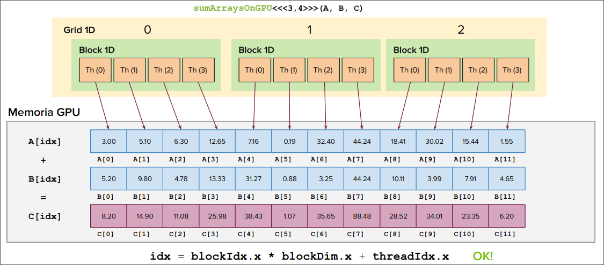
Proprietà Chiave:
Accesso alle Variabili di Identificazione
Perché Identificare i Threads?
Struttura dei Dati e Calcolo dell'indice Globale
In CUDA ogni thread ha un indice globale (gloabl_idx) che lo identifica nell'esecuzione del kernel. Il programmatore lo calcola usando l'indice del thread nel blocco e l'indice del blocco nella griglia.
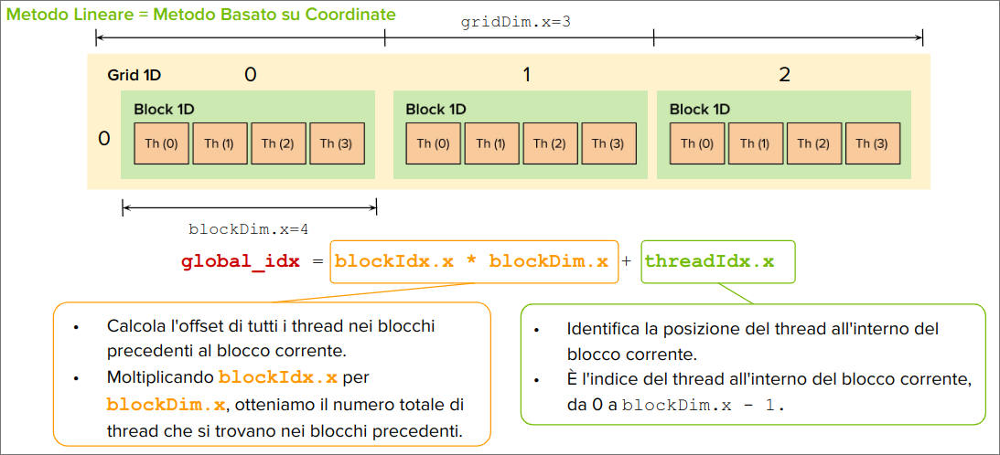
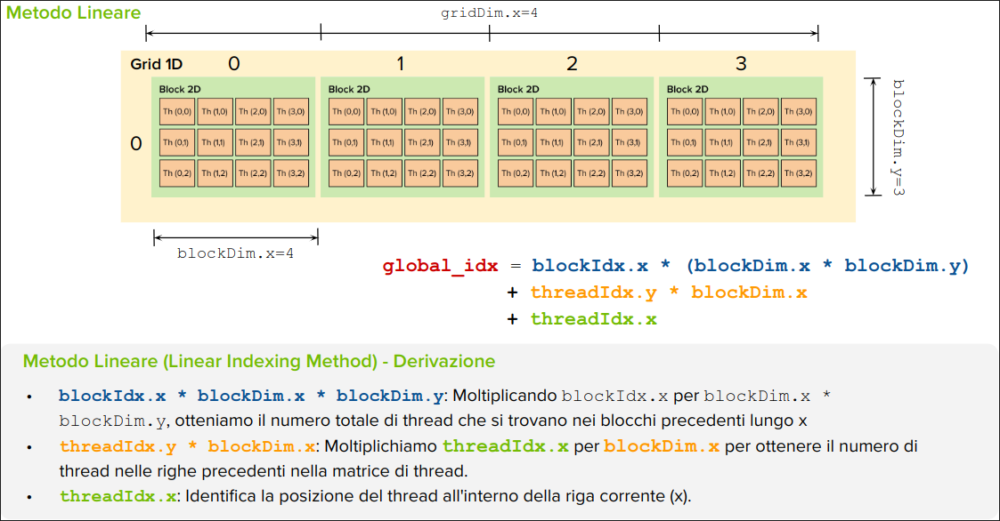
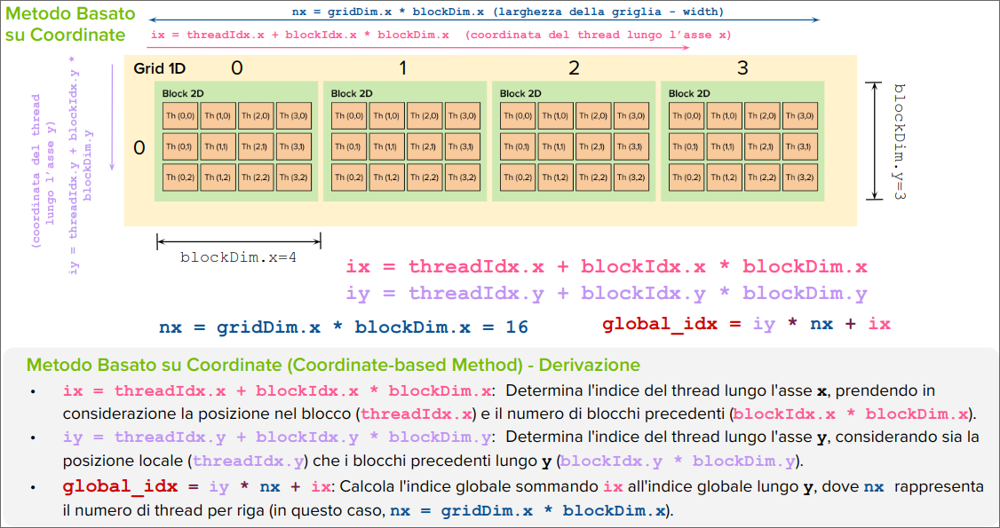
Il controllo dei kernel CUDA mira a conermare l'affidabilità dei calcolo eseguiti sulla GPU.
void checkResult(float *hostRef, float *gpuRef, const int N) {
double epsilon = 1.0E-8;
bool match = 1;
for (int i = 0; i < N; i++) {
if (abs(hostRef[i] - gpuRef[i]) > epsilon) {
match = 0;
printf("Arrays do not match!\n");
printf("host %5.2f gpu %5.2f at current %d\n", hostRef[i], gpuRef[i], i);
break;
}
}
if (match) printf("Arrays match.\n\n");
}
Suggerimenti per la Verifica:
Problemi:
#define CHECK(call){
const cudaError_t error = call;
if (error != cudaSuccess) {
printf("Error: %s:%d, ", __FILE__, __LINE__);
printf("code:%d, reason: %s\n", error, cudaGetErrorString(error));
exit(1);
}
}
Misurare e ottimizzare le prestazioni dei kernel CUDA è cruciale per garantire l'efficienza del codice.
Il profiling permette di analizzare l'uso delle risorse e identificare le aree di miglioramento.
Identificazione dei colli di bottiglia: Identificare le parti del codice che rallentano l'esecuzione, Generalmente una implementazione inefficiente o un accesso alla memoria lento.
Analisi degli effetti delle modifiche: Valutare come le modifiche del codice influenzano le prestazioni.
Confronto tra implementazioni: Valutare le prestazioni tra diverse strategie di implementazione.
Analisi del Bilanciamento Carico/Calcolo: Verificare se il carico di lavoro è distribuito in modo efficiente tra i ithread e i blocchi CUDA.
Metodi Principalo:
- Timer CPU: Semplice e diretto, utilizza funzioni di sistema per ottenere il tempo di esecuzione.
- Nvidia Nsight System e Nsight Compute: Strumenti di profilazione avanzati per analizzare le prestazioni dei kernel CUDA.
- Nvidia profiler (deprecato).
#include <time.h>
double cpuSecond() {
struct timespec ts;
timespec_get(&ts, TIME_UTC);
return (double)ts.tv_sec + (double)ts.tv_nsec * 1.0e-9;
}
double iStart = cpuSecond(); // Registra il tempo di inizio
kernel <<<gridSize, blockSize>>>(d_data); // Chiamata al kernel
cudaDeviceSynchronize(); // Sincronizza il device
double iElaps = cpuSecond() - iStart; // Calcola il tempo trascorso
printf("Tempo di esecuzione: %f\n", iElaps); // Stampa il tempo di esecuzione
La chiamata a cudaDeviceSynchronize() è necessaria per sincronizzare il device e assicurarsi che il kernel sia completato prima di calcolare il tempo trascorso.
Il tempo misurato include l'overhead di lancio del kernel e la sincronizzazione.
| Pro | Contro |
|---|---|
| Facile da implementare e utilizzare. | Impreciso per kernel molto brevi (millisecondi). |
| Non richiede librerie CUDA specifiche per il timing. | Include overhead non relativo all'esecuzione del kernel. |
| Funziona su qualsiasi sistema con supporto CUDA. | Non fornisce dettagli sulle fasi interne del kernel. |
| Efficace per kernel lunghi e misure approssimative. | Precisione influenzata dal carico dell'host. |
$ nvprof ./my_app
Disponibile su Google Colab (GPU NVIDIA Tesla T4, Compute Capability 7.5)
È uno strumento di profilazione e analisi delle prestazioni a livello di sistema. Fornisce una visione di insieme delle prestazioni dell'applicazione, inclusi CPU, GPU e interazioni di sistema. Permette di:
Si ha una visualizzazione grafica delle timeline di esecuzione, monitoraggio dell'utilizzo di memoria e cache e Supporto per sistemi multi-GPU.
$ nsys profile --stats=true ./my_app
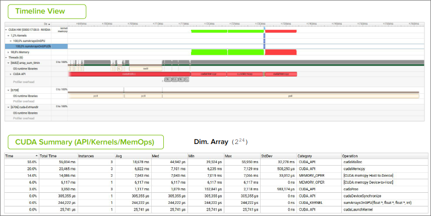
Sfide:
Best Practices:
cudaMalloc è un'operazione lenta.cudaFree quando non è più necessaria.È uno strumento di analisi delle prestazioni dei kernel CUDA che fornisce una visione dettagliata delle prestazioni dei kernel CUDA.
Permette di:
$ ncu --set full -o test_report ./my_app
Utilizzando NVIDIA Nsight Copmute si può esaminare il tempo di esecuzione del kernel, evidenziando dettagli cruciali sull'uso della memoria e delle unità di calcolo.
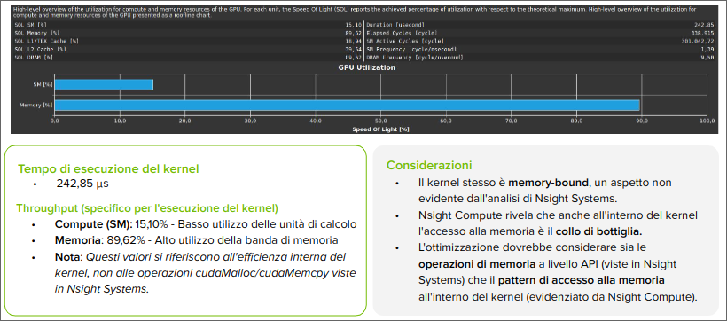
Le operazioni su matrici sono il cuore di molti algoritmi. CUDA permette di eseguire queste operazioni in modo molto veloce sfruttado la potenza delle GPU.
In CUDA come in altri contesti di programmazione, le matrici sono tipicamente memorizzate in modo lineare nella memoria globale utilizzando un approccio row-major o column-major.
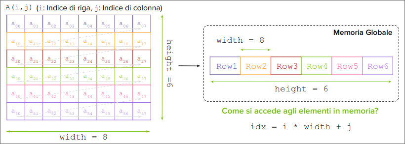
Obiettivo: Realizzare in CUDA la somma parallela di due matrici A e B per ottenere una matrice C.
Nell'elaborazione di matrici con CUDA, è fondamentale definire come i thread vengono mappati agli elementi della matrice. Questo processo di mapping incide direttamente sulle prestazioni dell'algoritmo.
Problema Generale:
idx = i * width + j.Impatto della Configurazione:
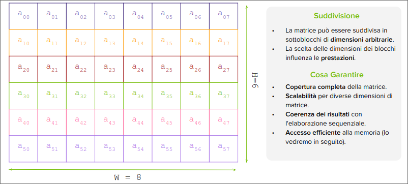
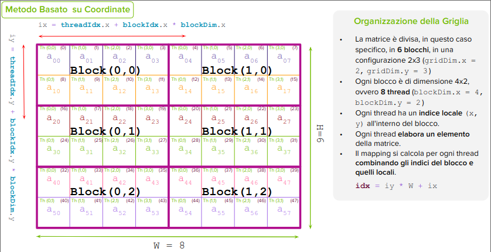
Prosegue con esempi